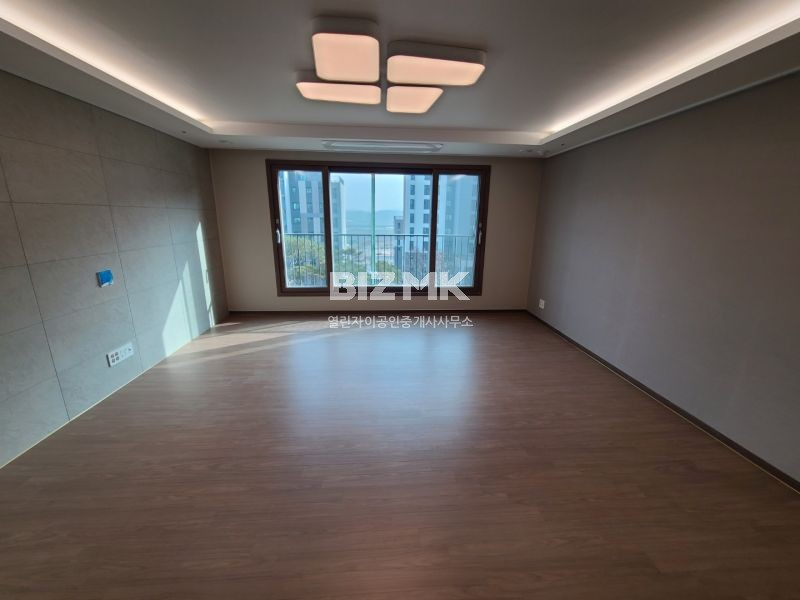

새나루1단지자이e편한세상 112동
매매 7억 5,000
아파트126㎡ (전용101.86)중/12층남동향

해당 매물 사진매물 기본 정보
- 매물 유형
- 아파트
- 거래 종류
- 매매
- 단지·지역
- 새나루1단지자이e편한세상
- 동
- 112동
- 면적 (네이버 표기)
- 126㎡ (전용101.86)
- 기타 공개 정보
- 중/12층 · 남동향
- 원문 확인일
- 2026.10.06
중개소가 적은 매물 설명
숲세권,대단지,시에5대,폴리싱타일,인덕션,줄눈,미세방충망,관리잘된집.
네이버에 등록된 설명입니다. 자세한 조건은 원문과 중개소에서 확인해 주세요.
자료 확인 2026.10.23 · 네이버 매물번호 2653276327
현재 가격, 관리비, 입주 가능일 등 상세 표시 사항은 네이버 매물 원문에서 확인해 주세요. 이 페이지는 제작 검토용 자료이며 거래 가능 상태를 보장하지 않습니다.
현재 가격, 관리비, 입주 가능일 등 상세 표시 사항은 네이버 매물 원문에서 확인해 주세요. 이 페이지는 제작 검토용 자료이며 거래 가능 상태를 보장하지 않습니다.